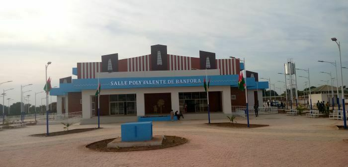

DESCRIPTION
Banfora est une ville du sud-ouest du Burkina Faso fondée en 1903. Elle est la capitale de la région des Cascades et de la Province de la Comoé (Pays du Paysan Noir) et chef-lieu du département du même nom. Ville-carrefour, elle s'est développée grâce à l'industrie de la canne à sucre et d'autres activités[1], et, aussi à l'apparition de l'exploitation de la mangue.Banfora est une ville pittoresque située dans la région des Cascades, au sud-ouest du Burkina Faso. Connue pour ses paysages magnifiques, ses cascades, ses dômes et son lac, Banfora est une destination touristique de choix. 
voir plus